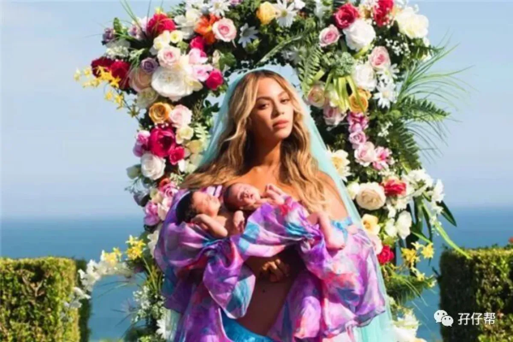
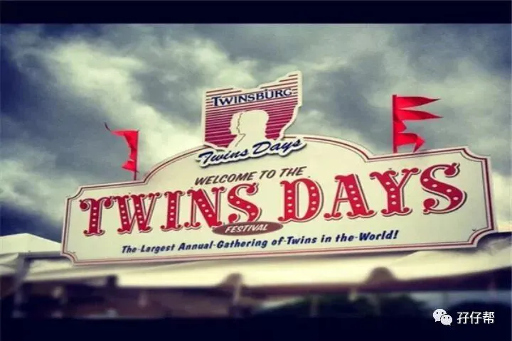
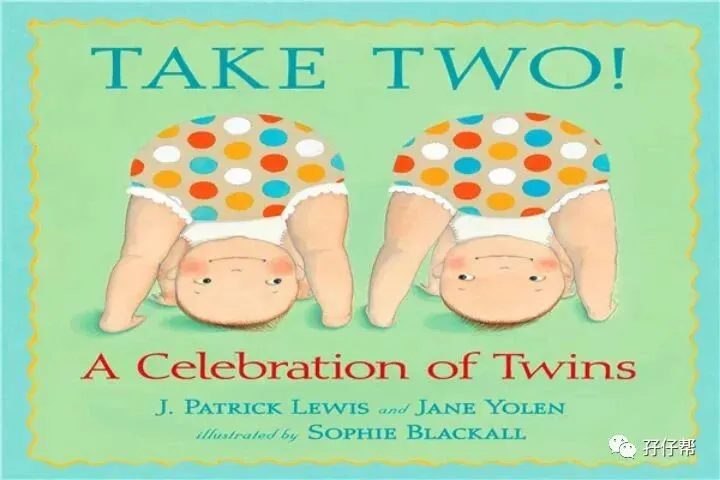
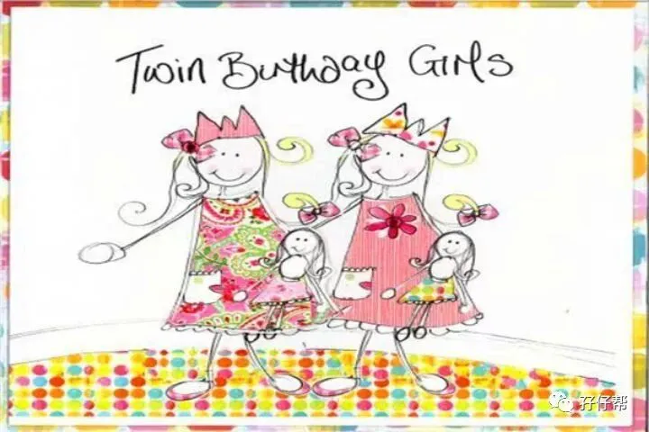
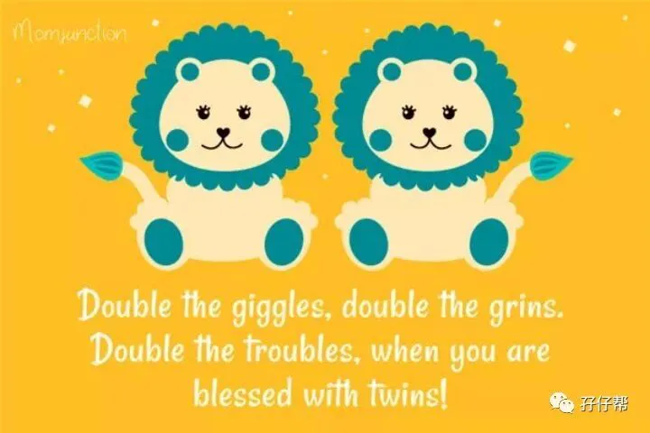

☝点击关注“孖仔帮” 与您分享双胞胎育儿经
文|圆圈妈 一个文思如尿崩的双胎妈妈
上期推文提到双胎妈妈坐月子，今天继续聊聊双胞胎宝宝的满月酒。
这个话题比较敏感，主要涉及到各地不同的满月酒风俗，众口难调。所以说，这是顶着风口浪尖分享圆圈兄弟的满月酒经历。
圆圈兄弟的满月酒搞得非常狼狈，如果再让我选择一次，我一定选择百日宴。
我踩过的坑啊，你们就看仔细咯，别急着跳。
圆圈满月，我们就在深圳给他们哥俩举办了一场小型的满月宴。
摆酒席之前有点纠结，毕竟他们早产1个月，即便他们已经出生30天了，纠正月龄后依然是实际意义上的新生儿。但考虑到摆满月酒无非就是与亲朋好友分享自己的喜悦，也为了让圆圈兄弟得到更多人的美好祝福。
现在想想，真的是失策啊！
我们都没有经验，不知道要准备什么，也没有人手，全部人的心思都在圆圈兄弟的屎尿屁身上。
因准备不充分，人员不到位，导致摆酒席期间故障频发，各种踉跄，狼狈不堪…
尤其是我，元气大伤，一身臃肿，蓬头垢面...导致我现在重新貌美如花地站在圆圈爸的同事面前时，大家都以为圆圈爸另结新欢，可见我当时在他们心目中是有多邋遢啊！
若双胞胎宝宝早产，建议选择百日宴或者等纠正月龄后再安排满月酒，理由如下：
早产儿出生满30天，纠正月龄后，实际还是新生儿，有些宝宝甚至可能还在医院里观察，即便是已经出院了，依然很脆弱，不适合吵闹，不宜出席宴会场合。
照顾两宝宝的头一个月，基本上找不到一个不缺觉的人，根本没暇顾及摆酒席的细节问题，期间还要挤出笑容招呼客人，实在疲惫。
宝妈还在坐月子，身体还没完全恢复就要去穿梭于觥筹交错之间，实在牵强了点。
两宝宝满三个月后，情况就不一样了。
历经100天的摧残折磨，基本上照顾两宝宝可以游刃有余，渐渐步入生活正规，此时更加有心思去好好办一场孩子们的人生第一场宴会。
当然，各地风俗不同，有些地方在宝宝降临后的第3天或者9天或者12天摆满月酒…
不管什么风俗，都要以两宝宝为中心，关键是要顺势而为、量力而行。
给双胞胎宝宝办满月酒席还是蛮大工程的，很多地方需要注意，下面总结一些经验，分享给正在筹备满月宴或者百日宴的双胞胎家庭。
不管你是出于什么目的要给两宝宝摆满月酒席，都请一切从简，切勿太张扬。
如果宾客过多，场面嘈杂混乱，容易失控。作为东道主的你，既要照顾两宝宝又要招呼宾客，会显得力不从心。
我和圆圈爸一致决定不搞大排场，只是通知了双方的亲戚好友以及同事，人数大概30几个人，正好摆了三桌！主要是怕人多招呼不周，忙不过来。
我和圆圈爸的社交圈子各自不搭边，很多人都不认识，这要全部聚在一起，不擅长交际的我，一定会疯掉的！
确定好人数之后，就要开始选酒店了，可以从3个因素考虑。
ℹℹ酒店环境：酒店环境可以不豪华，但必须得通风宽敞，最好是包厢形式。喝喜酒免不了要抽烟喝酒，很快就会乌烟瘴气，如果两宝宝长时间呆在空气不流通的密闭环境下会烦躁不安，哭闹不已。
最好包厢内还有小隔间，与宾客们隔开，方便大人照料小宝宝喝奶换尿布等。
因为没经验，考虑不周全，我们订的是餐厅大堂，正好隔壁是别人乔迁大喜，整个大堂人声鼎沸，闹哄哄的一片，跟菜市场没啥区别。
我们把圆圈抱出来一会儿给大家伙瞧瞧之后就赶紧抱着出去透气了，里面烟味，酒味，香水味，各种味道交织在一块…很呛！
ℹℹ酒店选址：不要太远，一般是选住址附近的酒店或餐馆，交通发达，方便宾客容易找到即可。
大多数新生儿宝宝都是满月那天才亮相在众人面前，算是第一次出门，尽量不要走太远，免得折腾。
我们就定在距离住址附近10公里远的餐厅，打车15分钟左右就到。
ℹℹ满月菜谱：点菜是个非常艰巨的任务，遵循少数服从多数的原则即可。一般餐厅会有满月酒套餐供你参考，你可以结合大多数宾客们的地方特色和饮食习惯，在套餐模板的基础上做少许改动即可。
我分析了下宾客们的情况，主要是两大派，圆圈爸和我的同事来自湖南和四川的居多，喜欢吃辣，而我这边的亲朋好友是广东客家的，吃不得辣。
因此，这个菜就是川湘菜和粤菜的大杂烩，我这边的宾客毕竟少数，故要求大多数菜放辣椒，部分菜系保持粤菜风味。
果然，普遍反响不错，大家都吃得很开心。
给宾客回礼也是一个很让人头疼的事情，各地习俗不一样，很难做到尽善尽美。
我和圆圈爸的两地风俗也完全不一样，我们广东风俗是直接回一个红包即可，圆圈爸那边的习俗比较丰富，一个红袋子内装一些糖果零食和两份红包（因为是两个宝宝满月，必须是双份红包）
好吧，嫁鸡随鸡嫁狗随狗，回礼方式按照圆圈爸那边的习俗：一个无纺布红袋子约20*30CM，装一个可乐，迷你方便面+6颗糖果和花+两个红包。
其他细节
✅✅如有必要，避免两宝宝出席满月酒
满月酒席毕竟人多，大家看到两宝宝都会说道喜祝贺的话，有些宾客还会忍不住想要抱抱双胞胎宝宝沾沾喜气。
别说我矫情，但请注意下。
刚满月的新生儿免疫系统还在完善中，体质较差，尤其是早产儿宝宝，完全没有免疫力，若有些宾客正好感冒中携带着病毒细菌，可能会通过手口进入到宝宝体内。
圆圈满月没多久就肺炎住院了，我不知道是不是跟出席宴会有关，但应该脱不了干系。
那天的状况如此混乱，圆圈好像击鼓传花一样被一群人轮着抱了一圈又一圈。而且每个怀抱婴儿的方式都不一样，不规范，圆圈被这样传来传去很折腾，当晚就特别哭闹，难安抚！
因此，尽量避免让两宝宝出席满月宴，免得真的因此感冒生病就得不偿失了。
如非要出席，那就做好防御措施，给他们带上小手套，回去后及时给两宝宝洗澡并更换衣物。对于宾客一些亲亲抱抱的要求，请礼貌拒绝！
✅✅若非要出席宴会，请带上两宝宝的随身用品
两宝宝的随身用品：奶粉，奶瓶，尿不湿，口水巾，纸巾，干纸巾，暖水壶，哺乳遮巾等都要带齐了，还有两宝宝的衣服，包被都尽量多带，避免温差大。
我没有经验，第一次作为东道主宴请宾客，非常紧张慌乱。去到酒店才发现所有东西都带了，只有奶粉忘记带，回去拿也来不及，酒席马上要开始了，只好抱着饿着肚子狂哭的圆圈兄弟出去招呼客人。
你呢？双胞胎宝宝的满月酒和百日宴，想好了吗？
还在孕期的宝妈要没事干，现在就来筹备下该怎么好好给两宝宝举办一场隆重盛大的酒席吧！
本文系圆圈妈sgguy-com原创，来源于孖仔帮，专注双胞胎孕期育儿经验分享，著作权归孖仔帮所有
---☜✪ The end ✪☞---
关于这个号
谢谢关注！我是圆圈妈
85后，全职双胎妈妈
家有孖仔男宝两枚，圆圈&圈圈
双胞胎育儿公众号：孖仔帮
旨意分享双胞胎育儿经验帮助双胞胎家庭
有经验可循
有组织可靠
希望我的经验对您有所启发
期待与您一起共享双胞胎育儿经
孖仔帮目前有4个微信社群
孕期群，喂养群，闲置群，双胞胎爸爸专属群，
如需入交流群，请+圆圈妈的微信号sgguy-com,或扫描下方二维码
由圆圈妈邀请入群
#重磅互动#
评论区聊一聊
你希望圆圈妈写什么育儿经验干货？
随便提，万一下篇就写了呢？
更多孖仔帮双胞胎原创育儿文章，
请猛戳 "阅读原文"
或者直接上圆圈妈的个人博客。
博客链接↓↓
https://www.sgguy.com/twinsbang




